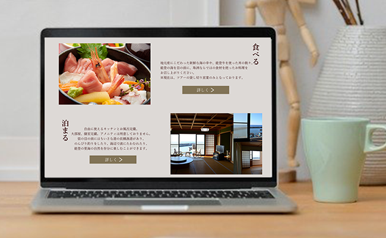
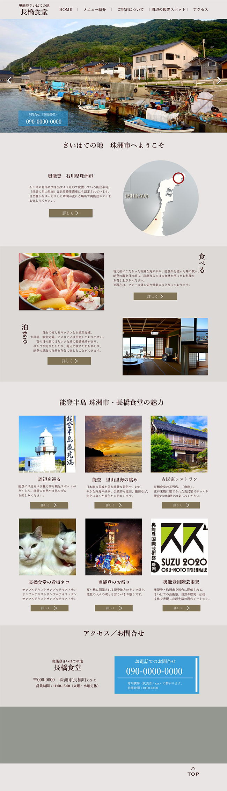

- 概要
- 食堂／ゲストハウス（石川県 奥能登）の紹介サイト
- 制作の目的
- お店やサービス、お店のある市全体の魅力発信、認知度向上を目的として制作
- ターゲット
- ・自然や文化に興味がある30-60代の一人旅やご夫婦での旅行者
・ツアー参加者、及びツアー主催旅行会社
・県外在住で珠洲市で飲食や宿泊ができる場所を探している方
- デザインの概要
-
クライアント様のご要望に沿い、シンプルかつベース色にアースカラーを使用して落ち着き感を演出いたしました。
初めて県外から訪れる方に、どのような魅力のある場所なのかや周辺の観光スポットもご案内できるようページ展開を構成しております。
強みである、「奥能登の観光スポットに近い」「魅力的な里山里海の風景」「新鮮な海産物」という点を強調できるよう素材をふんだんに使用し、Javascriptを使用した動きのあるサイトに仕上げました。
また、市内にある系列店も同時に紹介ができるようバナー展開で相互に行き来ができるようリンクさせております。
- 担当範囲
- ワイヤーフレーム / デザイン / コーディング（全5ページ展開）
- 制作期間
- 5日間
- 使用ツール
- Xd / Photoshop / Dreamweaver
- 備考
- 昨年、日本全国の移住生活をしている際にお世話になったお店の紹介のため制作いたしました。
何か自分にできることでお世話になった恩返しがしたい、また自分が実際に暮らすことで知った地域の魅力を外に発信することで還元できることがないかと考え、思いを込めて制作させていただきました。
※公開に際してはクライアント様とご相談中の為、テスト環境となっております。
